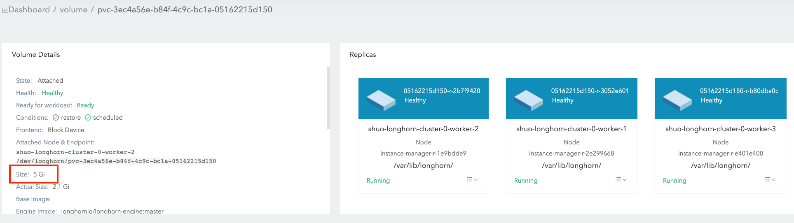
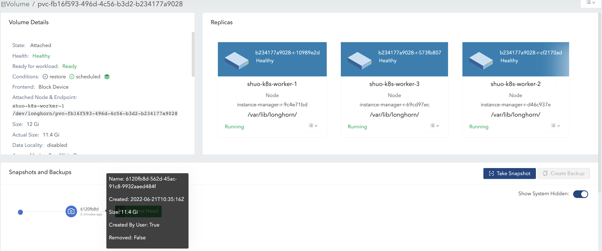

|
Esta é uma documentação não divulgada para SUSE® Storage 1.12 (Dev). |
Tamanho do Volume
Volume Size:

Esse valor, que você especificou durante a criação do volume, representa a quantidade de espaço disponível para o volume quando em uso.
As seguintes são outras maneiras de entender esse conceito:
-
O volume em si é apenas um objeto CRD do Kubernetes e os dados do volume são armazenados em réplicas. Esse valor representa o tamanho nominal de cada réplica.
-
SUSE Storage réplicas usam arquivos esparsos para armazenar dados. Esse valor representa o tamanho máximo para o qual um arquivo esparso pode ser expandido.
As réplicas são agendadas em nós com espaço alocável suficiente para cobrir esse tamanho nominal durante a criação do volume. Para mais informações, veja Uso de Espaço do Nó.
|
O tamanho máximo do volume é baseado no sistema de arquivos do disco (por exemplo, 16383 GiB para |
Volume Actual Size

Esse valor representa a quantidade de espaço usado por cada réplica (incluindo a cabeça do volume e snapshots) no nó.
Como todos os dados históricos (armazenados nos snapshots) e dados ativos estão incluídos no cálculo, esse valor pode exceder o tamanho nominal definido pelo usuário.
A interface do SUSE Storage exibe esse valor apenas quando o volume está em execução.
Exemplo
No exemplo, explicaremos como o volume size e actual size são alterados após uma série de operações relacionadas a IO e snapshots.
A ilustração apresenta a organização de arquivos de uma réplica. A cabeça do volume e os snapshots são, na verdade, arquivos esparsos, que mencionamos acima.

-
Crie um volume de 12 Gi com uma única réplica, depois anexe e monte-o em um nó. Veja a Figura 1 da ilustração.
-
Para o volume vazio, o nominal
sizeé 12 Gi e oactual sizeé quase 0. -
Há algumas informações meta no volume, portanto o
actual sizeé 260 Mi e não é exatamente 0.
-

-
Escreva 4 Gi de dados (data#0) no ponto de montagem do volume. O
actual sizeé aumentado em 4 Gi devido aos blocos alocados na réplica para os dados de 4 Gi. Enquanto isso, o comandodfno sistema de arquivos também mostra o espaço usado de 4 Gi. Veja a Figura 2 da ilustração.

-
Exclua os dados de 4 Gi. Então, o comando
dfmostra que o espaço usado do sistema de arquivos é quase 0, mas oactual sizepermanece inalterado.Os usuários podem ver por padrão que o volume
actual sizenão foi reduzido após a exclusão dos dados de 4 Gi. SUSE Storage é um sistema de armazenamento em nível de bloco. Portanto, a exclusão no sistema de arquivos apenas marca os blocos que pertencem ao arquivo excluído como não utilizados. Atualmente, SUSE Storage não aplicará operações TRIM/UNMAP automaticamente ou periodicamente. Se você quiser fazer trim no sistema de arquivos, consulte este doc para mais detalhes.
-
Então, reescreva os dados de 4 Gi (data#1), e o comando
dfno sistema de arquivos mostra novamente 4 Gi de espaço usado. No entanto, oactual sizeé aumentado em 4 Gi e se torna 8.25 Gi. Veja a Figura 3(a) da ilustração.Após a exclusão, o sistema de arquivos pode ou não reutilizar os blocos recentemente liberados de arquivos recentemente excluídos, de acordo com o design do sistema de arquivos, e consulte Estratégias de alocação de blocos de vários sistemas de arquivos. Se o nominal do volume
sizeé 12 Gi, oactual sizeno final variaria de 4 Gi a 8 Gi, uma vez que o sistema de arquivos pode ou não reutilizar os blocos liberados. Por outro lado, se o nominal do volumesizeé 6 Gi, oactual sizeno final variaria de 4 Gi a 6 Gi, porque o sistema de arquivos precisa reutilizar os blocos liberados na segunda rodada de gravação. Veja a Figura 3(b) da ilustração.Assim, alocar um nominal apropriado
sizepara um volume que suporta tarefas de gravação pesadas de acordo com o padrão de IO tornaria o uso do espaço em disco mais eficiente.

-
Tire um instantâneo (snapshot#1). Veja a Figura 4 da ilustração.
-
Agora, os dados#1 estão armazenados no instantâneo#1.
-
O novo tamanho da cabeça do volume é quase 0.
-
Com a cabeça do volume e o instantâneo incluídos, o
actual sizepermanece em 8,25 Gi.
-

-
Exclua os dados#1 do ponto de montagem.
-
As informações sobre a remoção do nível do sistema de arquivos dos dados#1 estão armazenadas no arquivo da cabeça do volume atual. Para o instantâneo#1, os dados#1 ainda são retidos como dados históricos.
-
O
actual sizeainda é 8,25 Gi.
-
-
Escreva 8 Gi de dados (dados#2) no ponto de montagem do volume e, em seguida, tire mais um instantâneo (snapshot#2). Veja a Figura 5 da ilustração.
-
Agora o
actual sizeé 16,2 Gi, que é maior do que osizenominal do volume. -
Do ponto de vista de um sistema de arquivos, a parte sobreposta entre os dois instantâneos é considerada como os blocos que devem ser reutilizados ou sobrescritos. Mas em termos de SUSE Storage, esses blocos são na verdade novos, mantidos em outro instantâneo/cabeça de volume. Veja os 2 instantâneos na Figura 6.
A cabeça do volume mantém apenas os dados mais recentes do volume, enquanto cada instantâneo pode armazenar dados históricos, bem como dados ativos, os quais consomem, no máximo, o espaço alocado. Portanto, o volume
actual size, que é a soma do tamanho da cabeça do volume e de todos os instantâneos, pode ser maior do que o tamanho especificado pelos usuários.Mesmo que os usuários não tirem instantâneos para volumes, há operações como reconstrução, expansão ou backup que levariam à criação de instantâneos (ocultos) do sistema. Como resultado, o volume
actual sizesendo maior do que o tamanho é inevitável em alguns casos de uso. -

-
Exclua o instantâneo#1 e aguarde a conclusão da purga do instantâneo. Veja a Figura 7 da ilustração.
-
Aqui, SUSE Storage efetivamente funde o instantâneo#1 com o instantâneo#2.
-
Para a parte sobreposta durante a fusão, os dados mais recentes (dados#2) serão mantidos nos blocos. Então, alguns dados históricos são removidos e o volume é reduzido (de 16,2 Gi para 11,4 Gi no exemplo).
-

-
Exclua todos os dados existentes (dados#2) e escreva 11,5 Gi de dados (dados#3) no ponto de montagem do volume. Veja a Figura 8 da ilustração.
-
Isso faz com que o tamanho real da cabeça do volume se torne 11,5 Gi e o tamanho total real do volume se torne 22,9 Gi.
-

-
Tente excluir o único instantâneo (instantâneo#2) do volume. Veja a Figura 9 da ilustração.
-
O instantâneo diretamente atrás da cabeça do volume não pode ser limpo. Se os usuários tentarem excluir esse tipo de instantâneo, SUSE Storage marcará o instantâneo como Removendo, ocultá-lo-á e, em seguida, tentará liberar a parte sobreposta entre a cabeça do volume e o instantâneo para o arquivo do instantâneo. A última operação é chamada de poda de instantâneo em SUSE Storage e está disponível desde a versão v1.3.0.
-
Como no exemplo tanto o instantâneo quanto a cabeça do volume ocupam a maior parte do espaço nominal, a parte sobreposta quase é igual ao tamanho real do instantâneo. Após a poda, o tamanho real do instantâneo é reduzido para 259 Mi e o volume é reduzido de 22,9 Gi para 11,8 Gi.
-

Aqui resumimos as coisas importantes relacionadas ao uso do espaço em disco que temos no exemplo:
-
Blocos não utilizados não são liberados.
SUSE Storage não emitirá operações TRIM/UNMAP automaticamente. Portanto, excluir arquivos de sistemas de arquivos não levará à diminuição/redução do tamanho real do volume. Você pode precisar verificar o doc e lidar com isso por conta própria, se necessário.
-
Blocos alocados, mas não utilizados, não são reutilizados.
Excluir e, em seguida, escrever novos arquivos levaria ao aumento contínuo do tamanho real. Uma vez que o sistema de arquivos pode não reutilizar os blocos recentemente liberados de arquivos excluídos recentemente. Assim, alocar um tamanho nominal apropriado para um volume que suporta tarefas de gravação intensas de acordo com o padrão de I/O tornaria o uso do espaço em disco mais eficiente.
-
Ao excluir instantâneas, a parte sobreposta dos blocos utilizados pode ser eliminada, independentemente de os blocos serem blocos recentemente liberados pelo sistema de arquivos ou ainda conterem dados históricos.
Sugestões de Configuração de Espaço para Volumes
-
Reserve espaço livre suficiente nos discos como buffers, caso o tamanho real dos volumes existentes continue a crescer.
-
Uma estimativa geral para o consumo máximo de espaço de um volume é
(N + 1) x head/snapshot average actual size
-
onde
Né o número total de instantâneos que o volume contém (incluindo a cabeça do volume), e o extra1é para o espaço temporário que pode ser necessário pela exclusão de instantâneos. -
O tamanho real médio dos instantâneos varia e depende dos casos de uso. Se os instantâneos forem criados periodicamente para um volume (por exemplo, confiando em trabalhos recorrentes de instantâneos), o valor médio seria o tamanho médio dos dados modificados para o volume no intervalo de criação do instantâneo. Se houver tarefas de gravação intensas para volumes, o tamanho real médio da cabeça/instantâneo seria o tamanho nominal do volume. Nesse caso, é melhor definir
Storage Over Provisioning Percentagepara ser menor que 100% para evitar a exaustão do espaço em disco. -
Alguns casos estendidos:
-
Há um trabalho recorrente de instantâneos com o número de retenção sendo
N. Então, a fórmula pode ser estendida para:(M + N + 1 + 1 + 1 + 1) x head/snapshot average actual size
-
A explicação da fórmula:
-
Msão os instantâneos criados manualmente pelos usuários. Trabalhos recorrentes não são responsáveis por remover esse tipo de instantâneo. Elas podem ser excluídas apenas pelos usuários. -
Né o número de retenção do trabalho recorrente de instantâneos. -
O 1º
1significa a cabeça do volume. -
O 2º
1significa o instantâneo extra criado pelo trabalho recorrente. Como o trabalho recorrente sempre cria um novo instantâneo e, em seguida, exclui o instantâneo mais antigo quando o número de instantâneos atuais criados por ele mesmo excede o número de retenção. Antes que a exclusão comece, há um instantâneo extra que pode ocupar espaço extra em disco. -
O 3º
1é o instantâneo do sistema. Se a reconstrução for acionada ou a expansão for emitida, SUSE Storage criará um instantâneo do sistema antes de iniciar as operações. E esse instantâneo do sistema pode não ser limpo imediatamente. -
O 4º
1é para o espaço temporário que pode ser necessário pela exclusão/purga de instantâneos.
-
-
-
Os usuários não querem instantâneo nenhum. Nem o instantâneo (criado manualmente) nem o trabalho recorrente serão lançados. Assumindo que configuração _Limpeza Automática de Instantâneos Gerados pelo Sistema está habilitada, então a fórmula se tornaria:
(1 + 1 + 1) x head/snapshot average actual size
-
O pior caso que leva a tanto uso de espaço:
-
Em algum momento, a 1ª reconstrução/expansão é acionada, o que leva à criação do 1º instantâneo do sistema.
-
As purgas antes e depois da 1ª reconstrução não fazem nada.
-
-
Há dados escritos na nova cabeça do volume, e a 2ª reconstrução/expansão de alguma forma é acionada.
-
A purga do instantâneo antes da 2ª reconstrução pode levar à redução do 1º instantâneo do sistema.
-
Então o 2º instantâneo do sistema é criado e a reconstrução é iniciada.
-
Após a reconstrução concluída, a purga subsequente do instantâneo levaria à fusão dos 2 instantâneos do sistema. Essa fusão requer espaço temporário.
-
-
Durante a purga de instantâneos posterior para a 2ª reconstrução, mais dados são escritos na nova cabeça do volume.
-
-
A explicação da fórmula:
-
O 1º
1significa a cabeça do volume. -
O 2º
1é o segundo instantâneo do sistema mencionado no pior caso. -
O 3º
1é para o espaço temporário que pode ser necessário pela purga/coalescência de 2 instantâneos do sistema.
-
-
-
-
-
-
Não mantenha muitos instantâneos para os volumes.
-
Limpar instantâneos ajudará a recuperar espaço em disco. Existem duas maneiras de limpar instantâneos:
-
Excluir os instantâneos manualmente através da interface SUSE Storage.
-
Defina um trabalho recorrente de instantâneo com retenção 1, então os instantâneos serão limpos automaticamente.
Além disso, observe que o espaço extra, até o nominal do volume
size, é necessário durante a limpeza e mesclagem de instantâneos. -
-
Um volume nominal apropriado
sizede acordo com as cargas de trabalho.
Solução de problemas
A carga de trabalho está gerando erro no space left on device.
Para resolver o erro “no space left on device”, você precisa entender que a diferença entre um volume estar cheio e os discos do nó estarem cheios é crucial para uma gestão adequada de armazenamento em SUSE Storage.
Volume cheio
Um volume está cheio quando seu sistema de arquivos montado atingiu seu limite de capacidade. * As gravações de dados falham com erros “no space left on device”. * O disco do host para a réplica do volume pode ainda ter espaço disponível para outros volumes.
-
Características:
-
O comando
dfmostra 100% de uso para o sistema de arquivos montado. -
Aplicativos não podem gravar novos dados no ponto de montagem do volume.
-
Exemplo:
$ df -h /mnt/longhorn-volume-example-dir
Filesystem Size Used Avail Use% Mounted on
/dev/longhorn-volume-example 12G 12G 0 100% /mnt/longhorn-volume-example-dirDisco do nó cheio
Os discos do nó podem não ter espaço suficiente para acomodar operações de volume porque os volumes são provisionados de forma fina, e os tamanhos das réplicas continuam a crescer. * As gravações de dados falham com erros “no space left on device”, mesmo que o sistema de arquivos do volume não esteja cheio. * Operações de volume como criação, expansão e gerenciamento de instantâneos podem ser limitadas. * Réplicas de volume recém-criadas não podem ser agendadas para os discos cheios.
-
Características:
-
Aplicativos não podem gravar novos dados no ponto de montagem do volume, mesmo que o volume não esteja cheio.
-
SUSE Storage operações nesses discos, como criação de réplicas, reconstrução ou operações de instantâneo, podem falhar.
-
Volumes com réplicas nesses discos de nó são afetados.
-
Proteção da integridade dos dados para cenários de discos sem espaço.
Quando múltiplas réplicas encontram simultaneamente erros “no space left on device”, SUSE Storage implementa a proteção da integridade dos dados. Se todas as réplicas graváveis estiverem em discos que estão sem espaço, o sistema preserva o número máximo de réplicas que gravaram a mesma quantidade de dados (a maior contagem de bytes gravados). Isso garante a consistência dos dados por meio de:
-
Retendo o número máximo de réplicas que gravaram a mesma quantidade de dados. Isso evita operações massivas de reconstrução de réplicas, permite uma reconstrução eficiente quando os discos de nó se recuperam de problemas de falta de espaço e garante que os usuários ainda possam ler os dados de forma consistente.
-
Marcando outras réplicas como
ERRpara prevenir a corrupção de dados. Isso garante que os usuários possam ler dados de forma consistente das réplicas retidas, e as réplicas marcadas comoERRserão reconstruídas a partir das réplicas retidas para manter a integridade dos dados quando os discos de nó se recuperarem de problemas de falta de espaço. -
Mantendo a acessibilidade do volume mesmo quando todos os discos subjacentes estão cheios.
Por exemplo, se as réplicas A, B e C encontrarem erros de espaço após gravar 1MB, 2MB e 2MB, respectivamente, as réplicas B e C permanecerão ativas enquanto a réplica A é marcada como ERR.
Soluções
Ao encontrar o erro no space left on device, primeiro verifique o uso do sistema de arquivos do volume, depois verifique o disco que hospeda a réplica do volume.
-
Verifique o uso do sistema de arquivos do volume: Se o uso do sistema de arquivos do volume for 100% (usando o seguinte comando):
df -h /mnt/your-volumeVocê deve expandir o volume ou remover arquivos desnecessários do sistema de arquivos.
-
Verifique o uso do disco do nó SUSE Storage: Verifique o uso do disco na interface SUSE Storage em Nó > Disco do Nó ou use a linha de comando:
# Check through SUSE Storage UI: Node > Node Disk # Or check the data path mount point df -h /var/lib/longhorn # default data pathSe o uso do disco for 100%, siga estas etapas para recuperar as cargas de trabalho:
-
Reduza a carga de trabalho.
-
Expanda o tamanho do disco ou remova arquivos desnecessários, como diretórios de réplicas órfãs e imagens de suporte usadas, no disco.
-
Expanda a carga de trabalho.
-